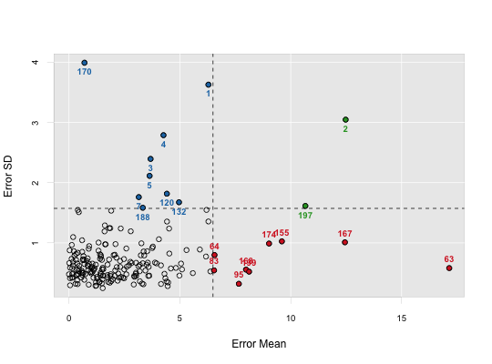
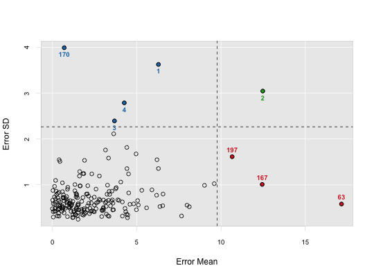

Outlier detection with ensemble partial least squares.
enpls.od(x, y, maxcomp = NULL, cvfolds = 5L, reptimes = 500L, method = c("mc", "boot"), ratio = 0.8, parallel = 1L)
5."mc" (Monte-Carlo resampling)
or "boot" (bootstrapping). Default is "mc".method = "mc".1 (not parallelized).A list containing four components:
error.mean - error mean for all samples (absolute value)
error.median - error median for all samples
error.sd - error sd for all samples
predict.error.matrix - the original prediction error matrix
To maximize the probablity that each observation can
be selected in the test set (thus the prediction uncertainty
can be measured), please try setting a large reptimes.
See enpls.fs for measuring feature importance with
ensemble partial least squares regressions.
See enpls.fit for fitting ensemble partial least
squares regression models.
data("alkanes") x = alkanes$x y = alkanes$y set.seed(42) od = enpls.od(x, y, reptimes = 50) print(od)#> Outlier Detection by Ensemble Partial Least Squares #> --- #> Mean residual for each sample: #> [1] 5.647568228 12.395939149 3.713471880 4.375997379 4.029503235 #> [6] 1.341405641 3.819764096 0.136434059 1.855613401 1.317826854 #> [11] 1.513461968 0.001650485 4.538966898 1.062740195 0.137352245 #> [16] 4.550965435 1.309552687 0.153020225 1.301146495 2.622458632 #> [21] 0.120304427 0.037273444 2.542439008 0.404980895 0.422010419 #> [26] 3.626632084 0.508171604 0.910403886 3.566686028 0.655123458 #> [31] 2.881652629 0.126268702 0.530249774 0.433851150 0.899569724 #> [36] 1.408390214 2.640656303 1.677527479 2.083764286 0.045846134 #> [41] 0.413429129 2.655136574 1.271867160 1.772016988 1.855088342 #> [46] 1.453483851 1.901505996 1.756258141 2.953594130 2.106113779 #> [51] 1.069858180 1.093387880 6.391991142 2.044620188 1.110729537 #> [56] 1.043029216 2.956328674 4.307022246 0.937808511 0.163275582 #> [61] 0.003806954 2.895891212 17.071218511 6.340052534 0.780822288 #> [66] 2.944375270 2.357750478 0.265076049 1.896311991 1.354027605 #> [71] 0.259045273 1.054482738 0.212113753 1.838825948 0.124452013 #> [76] 3.074302603 0.717166676 1.266889171 2.081726965 1.389601388 #> [81] 0.025075829 0.123123360 6.531545605 0.563440393 2.249240078 #> [86] 1.834010812 1.525331286 2.126655361 0.617389759 0.643590514 #> [91] 1.203021924 4.233962837 0.941917270 2.935441301 7.594317833 #> [96] 1.789473580 3.098077669 1.819947893 1.457294455 0.838602954 #> [101] 1.083411879 1.730423385 1.414318315 0.756936372 0.679917120 #> [106] 1.884145192 0.328981182 0.165570253 3.327513097 2.400689340 #> [111] 2.030513298 3.156998317 3.429009069 2.677954484 1.383939520 #> [116] 0.252749121 3.911750043 1.792304535 2.794162638 4.502912843 #> [121] 2.044972226 3.896755968 0.032567754 2.634598922 0.826007337 #> [126] 1.624005533 0.355823022 0.303678124 0.581972078 4.324012941 #> [131] 5.300963750 4.889892994 1.340555690 0.841515088 3.236127986 #> [136] 0.139248209 0.653270882 4.113137960 4.816726724 6.365123684 #> [141] 3.361532702 0.466559484 2.580751137 3.562308660 0.993626391 #> [146] 1.255992424 4.133680402 2.945677849 0.124184081 3.465715425 #> [151] 2.389080259 2.453535600 0.419424628 1.195389611 9.542512699 #> [156] 2.193754461 1.515241203 1.308583070 2.520786103 3.268490822 #> [161] 0.656712309 0.897517837 6.067755568 1.668697937 5.787358892 #> [166] 1.184153161 12.402614106 8.229865856 4.378714853 0.103507063 #> [171] 1.238732480 3.802783024 3.499487349 9.097573754 6.396567424 #> [176] 3.950850206 4.988076675 0.953495279 0.482598288 3.052676432 #> [181] 2.303218447 1.502325326 3.526172604 0.954739531 4.969894716 #> [186] 0.894442369 2.920326902 3.188369965 1.360217282 0.331807448 #> [191] 4.489996468 0.638983358 4.569994309 1.359756163 3.610861982 #> [196] 0.365450482 10.514232813 4.149974326 8.069511693 3.663998766 #> [201] 3.683860988 3.178387084 1.232122163 5.127151846 1.688868664 #> [206] 3.066563092 5.534872913 #> --- #> Residual SD for each sample: #> [1] 3.8621100 3.1984727 2.3678147 2.6989340 2.0955311 0.5674318 1.0079530 #> [8] 0.8649135 1.5807261 5.0870438 1.2395820 0.7083088 1.2068090 0.8270631 #> [15] 0.7917485 1.0453134 0.7211152 0.6595862 0.9249780 0.6185865 0.6939128 #> [22] 0.4303919 0.7968726 0.5459859 0.4855981 0.8195482 1.1195893 0.6644325 #> [29] 1.0564875 0.4841332 0.6173161 0.4058940 0.4984676 0.1857612 0.7806792 #> [36] 0.8132466 0.8829935 0.3645329 0.7819752 0.5890848 1.6133696 1.3588733 #> [43] 0.4856596 1.1816575 0.6075213 0.5363812 1.1719977 0.4890486 0.4410400 #> [50] 0.5297522 0.4725948 0.6764152 0.5231819 1.2964498 0.5477197 0.4054039 #> [57] 0.4362258 0.4376618 0.4950049 0.4267858 0.5750256 0.5333848 0.2946259 #> [64] 0.4008596 1.6195164 0.5882709 0.4387084 0.4766752 0.3874518 0.3262147 #> [71] 0.4000893 0.5743249 0.8033008 0.4490366 1.2512918 0.5067371 0.8203307 #> [78] 0.4101199 0.4517039 0.3757685 0.3763775 0.4183554 0.5506181 0.4913038 #> [85] 0.6606967 0.3421096 0.2466673 0.8117283 0.4970016 0.4003898 0.3101575 #> [92] 0.6747022 0.8347340 0.6574066 0.3169857 0.3541157 0.5116190 0.4662454 #> [99] 0.3059103 0.4283391 0.6369366 0.4313809 0.4961946 0.4609663 0.6631340 #> [106] 0.3989801 0.4673866 0.6307245 0.2780745 0.5448899 0.6112155 0.4913539 #> [113] 0.5537745 0.6122629 0.8144572 1.3535299 1.0985300 0.7479272 1.1894131 #> [120] 1.8463359 0.9226678 0.6711004 0.5497206 0.7446437 0.7692786 1.2906913 #> [127] 0.3702029 0.2288868 0.7075366 0.5915282 0.8824159 2.1288782 0.7689346 #> [134] 0.7997482 0.6182965 0.4781349 0.7792088 0.6918712 0.5850726 1.1684468 #> [141] 1.3343004 0.8560715 0.7758918 0.6346805 0.4975739 0.4498483 0.2657172 #> [148] 0.4595756 0.4750312 0.6206297 0.4601681 0.4204614 0.8062891 1.5121280 #> [155] 0.7847080 0.5285196 1.9204766 0.9003866 0.5555181 1.0327398 1.1467276 #> [162] 0.5220589 0.9488750 0.4113629 0.8152842 0.5407603 0.9955587 1.1774699 #> [169] 1.0694823 3.9111998 0.6381642 1.0015348 0.7059884 0.7593719 0.7907182 #> [176] 0.6476778 0.4748068 0.7046206 0.2876346 2.2420507 0.6991212 0.5254961 #> [183] 0.4358659 0.5023872 0.6255035 0.3059595 0.3021439 1.5523796 0.5899510 #> [190] 0.7145356 0.2356101 0.2652930 0.5408055 0.7246792 0.7818239 0.5717149 #> [197] 1.5148704 0.3191359 0.5123306 0.4617711 0.6468190 0.9325271 0.3374971 #> [204] 0.5625638 0.9015493 0.5997019 0.4816927plot(od)plot(od, criterion = 'sd')